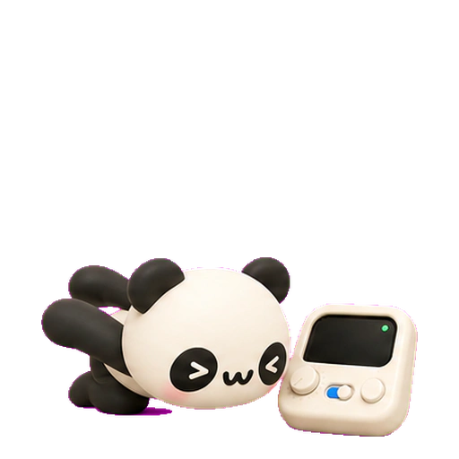
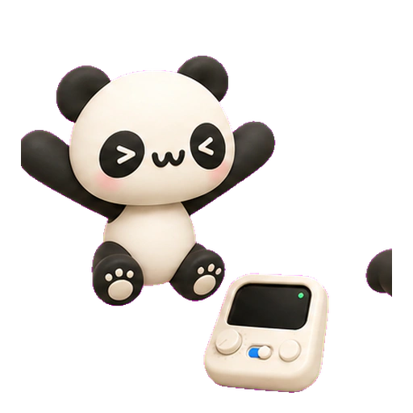
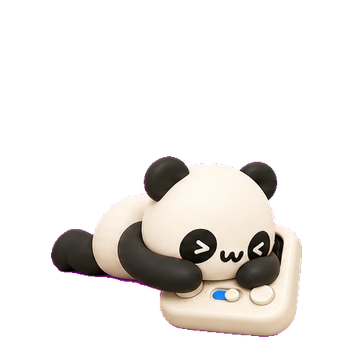
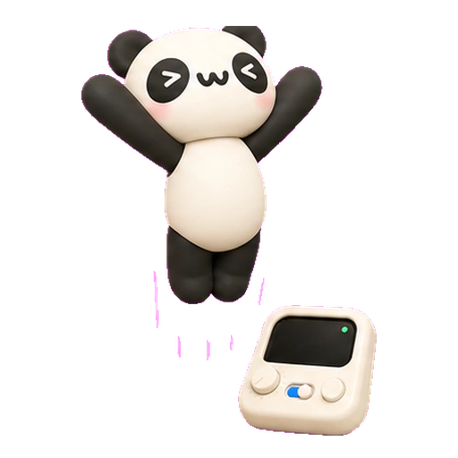

上
上调整
修改位置、大小和外观


长按组件就能移动，再选择它要执行的操作
修改位置、大小和外观
选择快捷键、媒体、鼠标等操作
为不同软件保存不同布局

打开 DMG，将奶猫妙控拖入“应用程序”
按照系统提示开启辅助功能
让两台设备连上同一个 Wi‑Fi，再扫描 Mac 端的二维码
也可以用小组件查看连接状态或打开控制台






 Codex
Codex DaVinci Resolve
DaVinci Resolve Microsoft PowerPoint
Microsoft PowerPoint Apple Music
Apple Music Spotify
Spotify Keynote
Keynote Final Cut Pro
Final Cut Pro 剪映专业版
剪映专业版需要，手机或平板与 Mac 要连接同一个 Wi‑Fi
在“系统设置 → 隐私与安全性 → 辅助功能”中允许奶猫妙控
屏幕预览需要额外允许“屏幕录制”，普通按键、旋钮和触控板不受影响
长按 App 图标选择“扫码配对”，或点按奶猫妙控小组件
打开“设备”，扫描新 Mac 上的二维码
不会，控制指令只在已经配对的设备之间传输
支持 macOS 13 及以上，Universal 版本兼容 Apple 芯片和 Intel
打开 DMG，将奶猫妙控拖到“应用程序”，然后扫码连接macOS 13+ · Apple 芯片与 Intel
下载